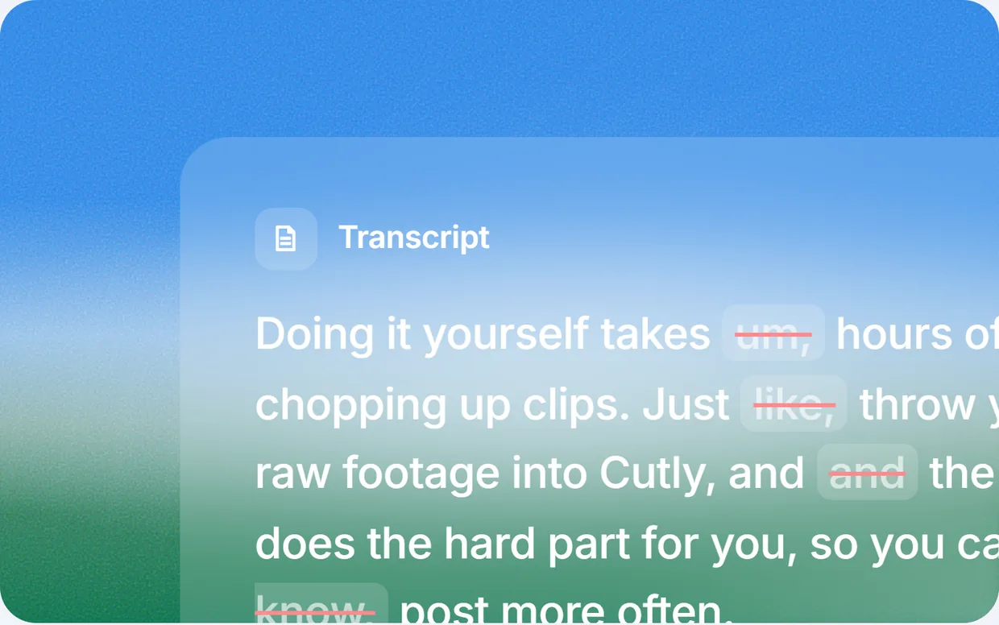

Edit your video like a document
The Transcript tab shows everything you say. Select words and delete them, and that part of the video is cut. Bring words back the same way.
Cut
Delete or bring back words in your transcript, and the changes are reflected in your video.

The Transcript tab shows everything you say. Select words and delete them, and that part of the video is cut. Bring words back the same way.
Make a word bold, italic or underlined from the transcript. The styling shows in your captions too.
The video, the timeline and the transcript are one edit, so a change in any of them shows in the other two.